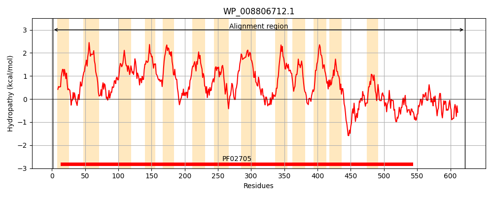
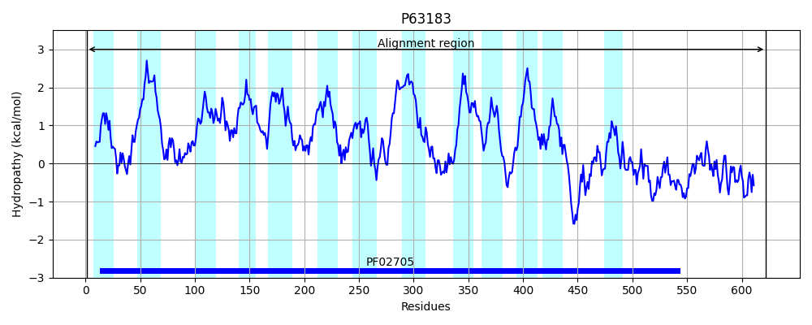
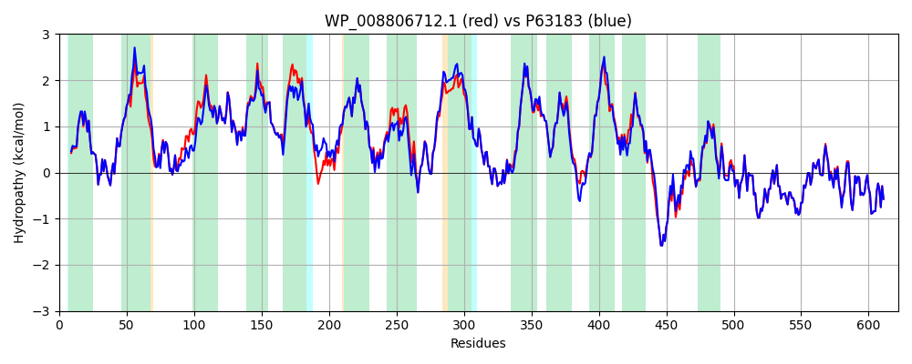

Hit Accession: P63183
Hit TCID: 2.A.72.1.1
Hit Description: gnl|BL_ORD_ID|11188 gnl|TC-DB|P63183|2.A.72.1.1 Low affinity potassium transport system protein kup - Escherichia coli.
Mach Len: 622
e:0.000000
Query TMS Count : 13
Hit TMS Count: 13
TMS-Overlap Score: 12.800000
Predicted Substrates:CHEBI:8345;potassium(1+)
BLAST Alignment:
Score: 2997 , Bit scores: 1159 bits, E-value: 0.0e+00, Alignment length: 622, Percentage identity: 93
Query: 1 MSTDNKQSLPALTLAAIGVVYGDIGTSPLYTLRECLSGQFGFGVERDAVFGFLSLIFWLLIFTVSIKYITFVMRADNAGEGGILTLMSLAGRNTSARMTSVLVILGLIGGSFFYGEVVITPAISVMSAIEGLEIIAPQLDTWIVPISIIVLTLLFVIQKHGTGMVGKLFAPIMLIWFLLLAVLGARSIYANPEVLQALNPYWAVHFFLQYKTVSFIALGAVVLSITGVEALYADMGHFGKLPIRVAWFSVVLPSLVLNYFGQGALLLKHPEAIKNPFFLLAPEWALIPMLIIATLATVIASQAVISGVFSLTRQAVRLGYLSPMRIIHTSEMESGQIYIPFINWLLYVSVVIVIVSFEHSSNLAAAYGIAVTGTMVLTSILSATVARKNWHWNKLFVGLMLVAFLCIDIPLFSANLDKIVSGGWLPLSLGLVMFTVMTTWKSERFRLLRRMHEHGNSLEAMISSLEKSPPVRVPGTAVYMSRALNVIPFALLHNLKHNKVLHERVILLTLRTEDAPYVHNVRRVQIEQLSPSFWRVVASYGWRETPNVEEVFHRCGLEGLSCRMMETSFFMSHESLIIGKRPWYLRLRGKLYLLLQRNALRAPDQFEIPPNRVIELGTQVEI 622
MSTDNKQSLPA+TLAAIGVVYGDIGTSPLYTLRECLSGQFGFGVERDAVFGFLSLIFWLLIF VSIKY+TFVMRADNAGEGGILTLMSLAGRNTSAR TS+LVI+GLIGGSFFYGEVVITPAISVMSAIEGLEI+APQLDTWIVP+SIIVLTLLF+IQKHGT MVGKLFAPIML WFL+LA LG RSI ANPEVL ALNP WAVHFFL+YKTVSFIALGAVVLSITGVEALYADMGHFGK PIR+AWF+VVLPSL LNYFGQGALLLK+PEAIKNPFFLLAP+WALIP+LIIA LATVIASQAVISGVFSLTRQAVRLGYLSPMRIIHTSEMESGQIYIPF+NW+LYV+VVIVIVSFEHSSNLAAAYGIAVTGTMVLTSILS TVAR+NWHWNK FV L+L+AFLC+DIPLF+ANLDK++SGGWLPLSLG VMF VMTTWKSERFRLLRRMHEHGNSLEAMI+SLEKSPPVRVPGTAVYMSRA+NVIPFAL+HNLKHNKVLHERVILLTLRTEDAPYVHNVRRVQIEQLSP+FWRVVASYGWRETPNVEEVFHRCGLEGLSCRMMETSFFMSHESLI+GKRPWYLRLRGKLYLLLQRNALRAPDQFEIPPNRVIELGTQVEI
Sbjct: 1 MSTDNKQSLPAITLAAIGVVYGDIGTSPLYTLRECLSGQFGFGVERDAVFGFLSLIFWLLIFVVSIKYLTFVMRADNAGEGGILTLMSLAGRNTSARTTSMLVIMGLIGGSFFYGEVVITPAISVMSAIEGLEIVAPQLDTWIVPLSIIVLTLLFMIQKHGTAMVGKLFAPIMLTWFLILAGLGLRSIIANPEVLHALNPMWAVHFFLEYKTVSFIALGAVVLSITGVEALYADMGHFGKFPIRLAWFTVVLPSLTLNYFGQGALLLKNPEAIKNPFFLLAPDWALIPLLIIAALATVIASQAVISGVFSLTRQAVRLGYLSPMRIIHTSEMESGQIYIPFVNWMLYVAVVIVIVSFEHSSNLAAAYGIAVTGTMVLTSILSTTVARQNWHWNKYFVALILIAFLCVDIPLFTANLDKLLSGGWLPLSLGTVMFIVMTTWKSERFRLLRRMHEHGNSLEAMIASLEKSPPVRVPGTAVYMSRAINVIPFALMHNLKHNKVLHERVILLTLRTEDAPYVHNVRRVQIEQLSPTFWRVVASYGWRETPNVEEVFHRCGLEGLSCRMMETSFFMSHESLILGKRPWYLRLRGKLYLLLQRNALRAPDQFEIPPNRVIELGTQVEI 622 | Protein Hydropathy Plots: |
|---|
|  |  |
Pairwise Alignment-Hydropathy Plot:
|
|---|
|  |